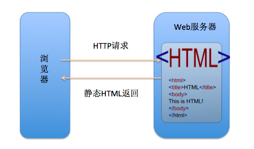
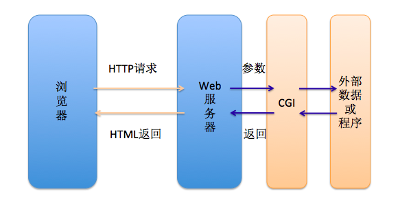
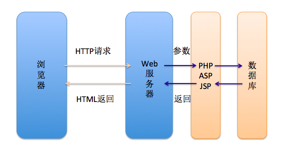
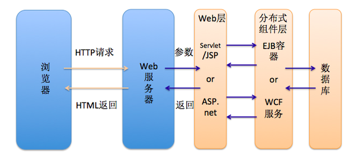
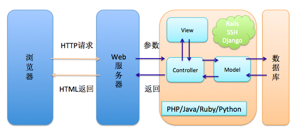
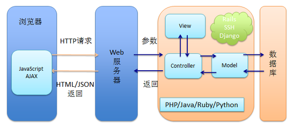
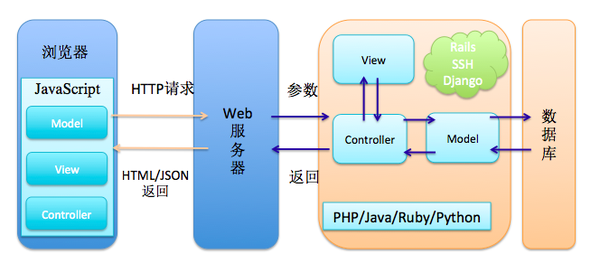
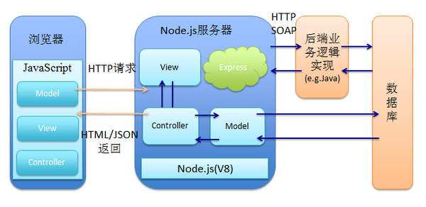

静态html

CGI与动态html

Web服务器可以通过CGI执行外部程序，让外部程序根据Web请求内容生成动态的内容
比如你用C语言编写CGI程序，你把希望返回的HTML内容通过printf输出就可以发送给Web服务器，进而返回给用户
CGI与动态html

PHP/ASP/JSP可以把程序（动态内容）嵌入到HTML（模版）中去执行
可连接数据库，Web从一个静态资源分享媒介真正变为一个分布式的计算平台
分布式企业计算平台

Web广泛用于构建大型应用提出了分布式、安全性、事务性等方面的要求
两大平台：
1). J2EE：服务器端Web组件Java Servlet和JSP，服务器端业务组件Enterprise Java Bean (EJB)
2). ASP.net
后端MVC框架

MVC分离+全栈概念：Spring MVC, Ruby on Rails, Python+Django
AJAX/JSON

AJAX：ECMAScript, google map, gmail
前端MVC

避免js代码膨胀：BackboneJS, AngularJS, EmberJS, KnockoutJS
nodeJS

浏览器端处理展现层逻辑，服务端Controller这一层以及相关的模板渲染、路由、数据接口以及Session/Cookie处理交给Nodejs来做